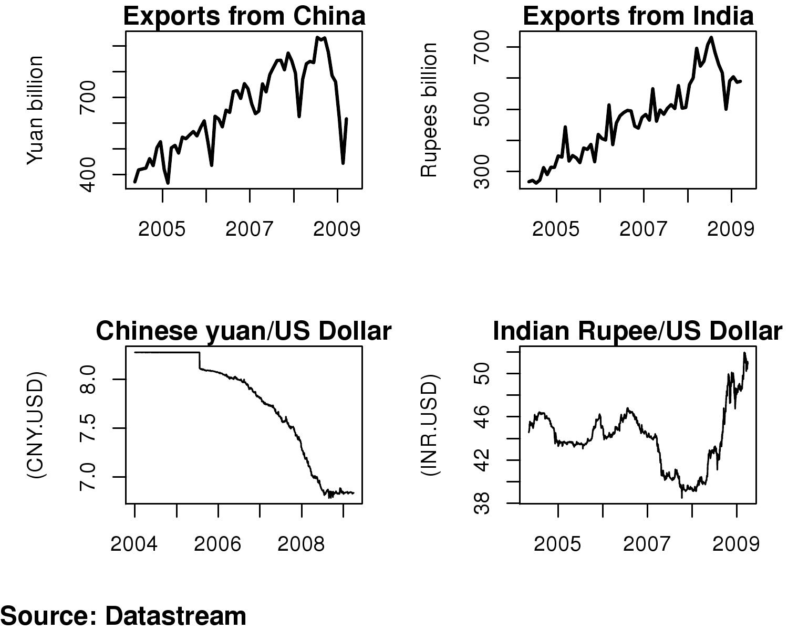

The flexibility bonus
Financial Express, 11 May 2009
The sharp decline in demand from the US and the reduction in world trade have hit exports from both India and China. In February, exports from China measured in dollars declined by nearly 26 percent on a year on year basis. Exports improved slightly in March, perhaps thanks to export rebates given to 3,800 items, but remain a big source of concern, especially considering the decline of 9 percent in world trade predicted for 2009. The decline in exports from India is also worrisome. Starting October 2008, exports started declining. In year on year terms, the decline was 13 percent in dollar terms in October and 20 percent in November 2008. When exports fell by only 5.2 percent in dollar terms in the month of December, it appeared to suggest that the decline may have been due to the financial crisis, especially the difficulties being faced in financing trade credit. The situation on credit, however, eased as governments intervened actively. The bad news on exports was back with a bang in January '09 when exports declined by 16 percent. The situation worsened in February when they fell by 22 percent on a year on year basis and then worsened even further in March when in dollar terms exports from India were 33 percent lower compared to the previous year.
Even though Indian exporters appear to be in as bad a shape, if not worse, than China, they have got some respite thanks to the depreciation of the rupee. In March 2007 when the rupee appreciated sharply there was huge media coverage about how exporter income had gone down sharply. Now, with the rupee moving by 25 percent, from Rs 40/USD to Rs 50/USD, Indian exports have not been as badly hit as the Chinese whose currency at first steadily appreciated and has then been stable.
The first part of the attached figure shows exports from China measured in Chinese yuan. These have witnessed a sharp dip since the beginning of the crisis and are now at 2006 levels. As the figure below it shows, the movement of the Chinese yuan since 2004 has added to the woes of the exporters. A comparison with India is instructive. The figure shows exports from India measured in rupees. Even though the news in dollar terms has been very bad, as the graph below it shows, the movement of the Indian rupee vs the US dollar over the same period has been far more volatile than the Chinese yuan. The rupee was allowed to appreciate and depreciate far more than the Chinese currency. Even though the RBI was intervening significantly in the currency markets, the difficulties that they ran into put constraints on this intervention. The limited appreciation of the rupee in good times, that we experienced, has helped ease political pressure on India to prevent depreciation in recent times.
This has not been the case for China. The Chinese currency has not been allowed to depreciate in the crisis, despite the large changes in foreign capital flows witnessed by China. To some extent this can be explained by international pressure, for example, by Europe, and the argument that if China did not let its currency respond to market forces and appreciate in earlier periods, now it does not have the legitimacy to allow the currency to be set by market forces and consequently to depreciate. So while India benefits from the flexibility, however limited, that was permitted for the rupee dollar rate, Chinese exporters have no such relief.
Thus if despite huge protests from exporters and reportedly significant pressure from the Ministry of Commerce, rupee appreciation was not prevented, it has in the light of the current international situation, turned out to be a boon.
Back up to Ila Patnaik's media page
Back up to Ila Patnaik's home page